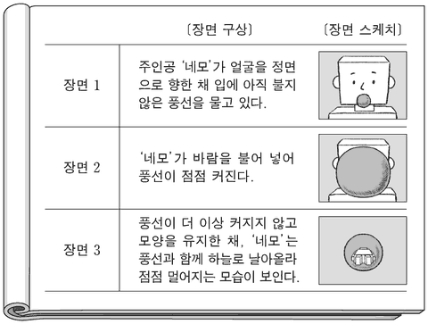

3D 영상
지문을 먼저 읽고, 이해가 막히는 문단에서 ‘그림으로 보기’를 누르세요. 그림은 문단을 따라 바뀝니다.
1문단최근의 3D 애니메이션은 섬세한 입체 영상을 구현하여 실물을 촬영한 것 같은 느낌을 준다. 실물을 촬영하여 얻은 자연 영상을 그대로 화면에 표시할 때와 달리 3D 합성 영상을 생성, 출력하기 위해서는 모델링과 렌더링을 거쳐야 한다. 모델링은 3차원 가상 공간에서 물체의 모양과 크기, 공간적인 위치, 표면 특성 등과 관련된 고유의 값을 설정하거나 수정하는 단계이다. 모양과 크기를 설정할 때 주로 3개의 정점으로 형성되는 삼각형을 활용한다. 작은 삼각형의 조합으로 이루어진 그물과 같은 형태로 물체 표면을 표현하는 방식이다. 이 방법으로 복잡한 굴곡이 있는 표면도 정밀하게 표현할 수 있다. 이때 삼각형의 꼭짓점들은 물체의 모양과 크기를 결정하는 정점이 되는데, 이 정점들의 개수는 물체가 변형되어도 변하지 않으며, 정점들의 상대적 위치는 물체 고유의 모양이 변하지 않는 한 달라지지 않는다. 물체가 커지거나 작아지는 경우에는 정점 사이의 간격이 넓어지거나 좁아지고, 물체가 회전하거나 이동하는 경우에는 정점들이 간격을 유지하면서 회전축을 중심으로 회전하거나 동일 방향으로 동일 거리만큼 이동한다. 물체 표면을 구성하는 각 삼각형 면에는 고유의 색과 질감 등을 나타내는 표면 특성이 하나씩 지정된다.
2문단공간에서의 입체에 대한 정보인 이 데이터를 활용하여, 물체를 어디에서 바라보는가를 나타내는 관찰 시점을 기준으로 2차원의 화면을 생성하는 것이 렌더링이다. 전체 화면을 잘게 나눈 점이 화소인데, 정해진 개수의 화소로 화면을 표시하고 각 화소별로 밝기나 색상 등을 나타내는 화솟값이 부여된다. 렌더링 단계에서는 화면 안에서 동일 물체라도 멀리 있는 경우는 작게, 가까이 있는 경우는 크게 보이는 원리를 활용하여 화솟값을 지정함으로써 물체의 원근감을 구현한다. 표면 특성을 나타내는 값을 바탕으로, 다른 물체에 가려짐이나 조명에 의해 물체 표면에 생기는 명암, 그림자 등을 고려하여 화솟값을 정해 줌으로써 물체의 입체감을 구현한다. 화면을 구성하는 모든 화소의 화솟값이 결정되면 하나의 프레임이 생성된다. 이를 화면출력장치를 통해 모니터에 표시하면 정지 영상이 완성된다.
3문단모델링과 렌더링을 반복하여 생성된 프레임들을 순서대로 표시하면 동영상이 된다. 프레임을 생성할 때, 모델링과 관련된 계산을 완료한 후 그 결과를 이용하여 렌더링을 위한 계산을 한다. 이때 정점의 개수가 많을수록, 해상도가 높아 출력 화소의 수가 많을수록 연산 양이 많아져 연산 시간이 길어진다. 컴퓨터의 중앙처리장치(CPU)는 데이터 연산을 하나씩 순서대로 수행하기 때문에 과도한 양의 데이터가 집중되면 미처 연산되지 못한 데이터가 차례를 기다리는 병목 현상이 생겨 프레임이 완성되는 데 오랜 시간이 걸린다. CPU의 그래픽 처리 능력을 보완하기 위해 개발된 ㉠그래픽처리장치(GPU)는 연산을 비롯한 데이터 처리를 독립적으로 수행할 수 있는 장치인 코어를 수백에서 수천 개씩 탑재하고 있다. GPU의 각 코어는 그래픽 연산에 특화된 연산만을 할 수 있고 CPU의 코어에 비해서 저속으로 연산한다. 하지만 GPU는 동일한 연산을 여러 번 수행해야 하는 경우, 고속으로 출력 영상을 생성할 수 있다. 왜냐하면 GPU는 한 번의 연산에 쓰이는 데이터들을 순차적으로 각 코어에 전송한 후, 전체 코어에 하나의 연산 명령어를 전달하면, 각 코어는 모든 데이터를 동시에 연산하여 연산 시간이 짧아지기 때문이다.
다음은 3D 애니메이션 제작을 위한 계획의 일부이다. 윗글을 바탕으로 할 때 적절하지 않은 것은? [3점]
